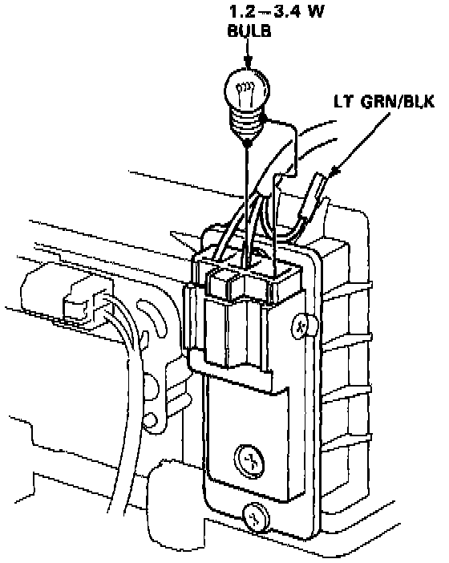

Component Test - Automatic Climate Control

NOTE: The power transistor cannot be tested with ordinary circuit testers. If the blower motor does not operate and you feel that the problem may be the power transistor, test as described below.
1. Check the blower motor and its wire harness.
- If they are not OK, repair or replace as necessary, then retest.
- If they are OK, go to step 2.
2. Disconnect the wire harness from the power transistor. Pull out the LT GRN/BLK lead from the connector and connect a 1.2 - 3.4 watt bulb as shown. Then, reconnect the wire harness to the transistor.
3. Turn the ignition on.
- If the blower motor now operates, the controller is faulty. Replace it and retest.
- If the blower motor still does not operate, the power transistor is faulty. Replace it and retest.
CAUTION:
- To avoid a loose or disconnected terminal, be careful not to damage the locking tab when disconnecting and connecting the terminal.
- Insulate the LT GRN/BLK lead terminal from the body until the testing is completed.